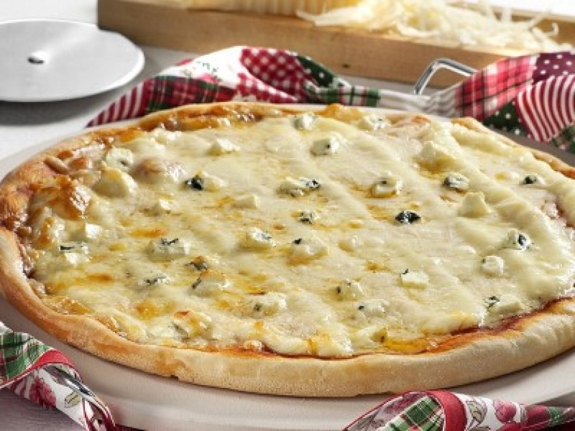
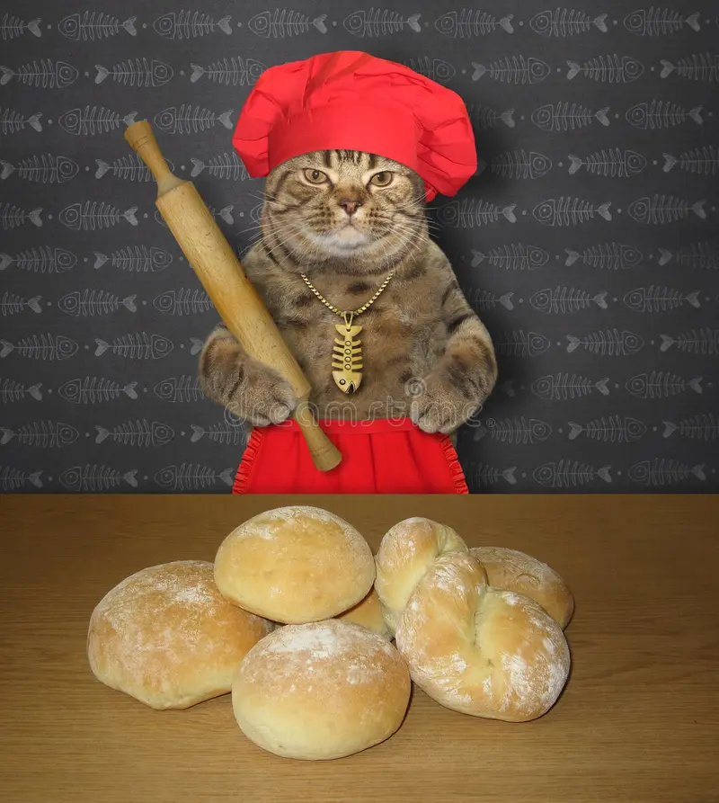
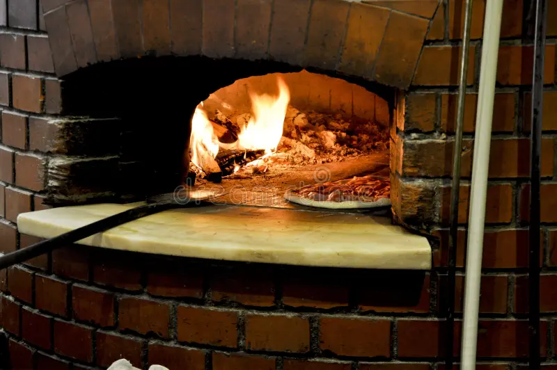

RECEITINHAS DONA SIRLENE
venha aprender de uma forma magica
Pizza 4 queijos
Uma pizzazinha pra animar o seu dia!!!

Massa
- 2 xícaras (chá) de farinha de trigo (220 g)
- 1 colher (sobremesa) de açúcar
- 1 colher (chá) de fermento biológico seco
- 1 colher (café) de sal
- 3 colheres (sopa) de azeite de oliva ou óleo
- 2 colheres (sopa) de aguardente
- Cerca de 150 ml de leite ou água
Molho napolitano
- 3 colheres (sopa) de azeite de oliva
- 3 dentes de alho picados
- 1 kg de tomates maduros sem pele e sementes em cubos de 1,5 cm (deixe escorrer sobre uma peneira)
- 1 colher (chá) de orégano ou manjericão desidratado
- Sal e pimenta-do-reino
Cobertura
- 100 g de provolone ralado grosso
- 100 g de muçarela ralada grosso
- 100 g de parmesão ralado grosso
- 100 g de Catupiry cortado em fatias finas para cobrir
- 1 colher (sopa) de azeite de oliva

MODO DE PREPARO
- 1. Massa
- 2. Misture todos os ingredientes na ordem indicada e amasse até obter uma mistura homogênea.
- 3. Sove um pouco, cubra e deixe em repouso por 15 minutos.
- 4. Abra a massa com o rolo sobre uma superfície enfarinhada até obter 1 disco com 35 cm de diâmetro.
- 5. Disponha em fôrma de pizza grande untada com óleo.
- 6. Leve ao forno quente preaquecido (220 ºC) por cerca de 10 minutos para pré-assar.
- 7. Espalhe o molho napolitano e distribua a muçarela misturada com o provolone e o parmesão.
- 8. Cubra com as fatias de Catupiry e regue com o azeite.
- 9. Leve de volta ao forno, na mesma temperatura, até gratinar.

MOLHO NAPOLITANO
- 10. Aqueça o azeite em uma panela grande e refogue o alho por 2 ou 3 minutos.
- 11. Acrescente o tomate e cozinhe em fogo alto até evaporar o líquido, lembrando que ele deve permanecer em pedaços macios.
- 12. Prove e, se necessário, adicione 1 colher (chá) de açúcar para “cortar” a acidez.
- 13. Tempere com o orégano ou manjericão e sal e pimenta-do-reino a gosto.